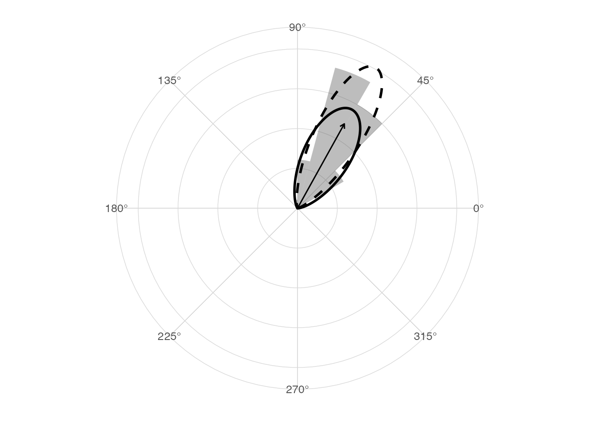
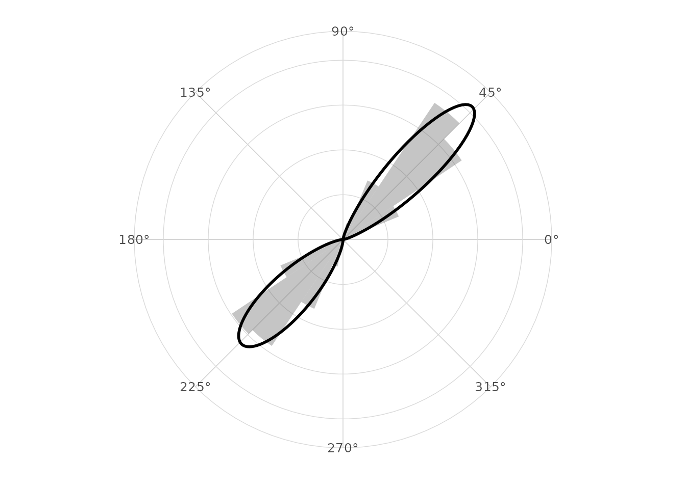

Purpose
This vignette gives reproducible validation examples for the main
numerical components in ggcircular. The goal is not to
provide a formal proof. The goal is to make core assumptions visible and
testable.
Boundary behavior
Angles close to zero and 2 * pi should have a mean close
to zero.
boundary_angles <- c(0.02, 0.05, 2 * pi - 0.05, 2 * pi - 0.02)
tibble(
arithmetic_mean = mean(boundary_angles),
circular_mean = mean_direction(boundary_angles),
Rbar = mean_resultant_length(boundary_angles)
)
#> # A tibble: 1 × 3
#> arithmetic_mean circular_mean Rbar
#> <dbl> <dbl> <dbl>
#> 1 3.14 0 0.999Axial behavior
Angles separated by pi cancel for directional data but
agree for axial data.
theta <- c(0, pi)
tibble(
setting = c("directional", "axial"),
mean = c(mean_direction(theta), mean_direction(theta, axial = TRUE)),
Rbar = c(mean_resultant_length(theta), mean_resultant_length(theta, axial = TRUE))
)
#> # A tibble: 2 × 3
#> setting mean Rbar
#> <chr> <dbl> <dbl>
#> 1 directional NA 6.12e-17
#> 2 axial 0 1 e+ 0Known mean direction
The following simulation is concentrated around
pi / 3.
set.seed(20260531)
known_mean <- pi / 3
simulated_angles <- normalize_angle(rnorm(400, mean = known_mean, sd = 0.25))
circular_summary(tibble(theta = simulated_angles), theta)
#> # A tibble: 1 × 7
#> n mean R Rbar variance sd kappa
#> <int> <dbl> <dbl> <dbl> <dbl> <dbl> <dbl>
#> 1 400 1.06 388. 0.970 0.0305 0.249 16.7
angular_distance(mean_direction(simulated_angles), known_mean)
#> [1] 0.01680975
ggplot(tibble(theta = simulated_angles), aes(x = theta)) +
geom_rose(aes(y = after_stat(density)), bins = 24, alpha = 0.4) +
geom_circular_density(linewidth = 1) +
geom_mean_direction() +
stat_vonmises_fit(linewidth = 1, linetype = 2) +
scale_x_circular_degrees() +
coord_circular() +
theme_circular()
Von Mises mixture recovery
A two-component mixture should recover two separated modes in this simple simulation.
set.seed(20260531)
mixture_angles <- c(
normalize_angle(rnorm(250, mean = pi / 4, sd = 0.20)),
normalize_angle(rnorm(250, mean = 5 * pi / 4, sd = 0.25))
)
mixture_fit <- fit_vonmises_mixture(mixture_angles, k = 2, max_iter = 100)
tidy_circular(mixture_fit)
#> # A tibble: 2 × 4
#> component proportion mu kappa
#> <int> <dbl> <dbl> <dbl>
#> 1 1 0.500 0.800 27.0
#> 2 2 0.500 3.94 16.8
glance_circular(mixture_fit)
#> # A tibble: 1 × 8
#> n components logLik AIC BIC iterations converged axial
#> <int> <int> <dbl> <dbl> <dbl> <int> <lgl> <lgl>
#> 1 500 2 -297. 605. 626. 4 TRUE FALSE
ggplot(tibble(theta = mixture_angles), aes(x = theta)) +
geom_rose(aes(y = after_stat(density)), bins = 32, alpha = 0.35) +
stat_vonmises_mixture(fit = mixture_fit, linewidth = 1) +
scale_x_circular_degrees() +
coord_circular() +
theme_circular()
Optional comparison with circular
When the optional circular package is installed, the
mean direction can be compared against
circular::mean.circular().
if (requireNamespace("circular", quietly = TRUE)) {
tibble(
ggcircular = mean_direction(simulated_angles),
circular = as.numeric(circular::mean.circular(circular::circular(simulated_angles)))
)
}
#> # A tibble: 1 × 2
#> ggcircular circular
#> <dbl> <dbl>
#> 1 1.06 1.06